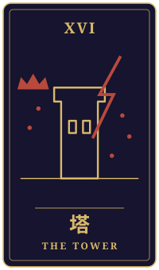
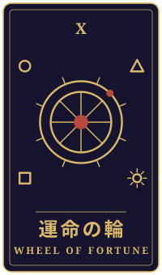

隙間を教えた
物語の手前に、ひとつの相談がありました。三枚のタロットをめぐるやりとりを、聞こえたままに書き留めています。
持ち込まれた相談
去年の春に父を亡くし、山あいの実家が空き家になりました。週末に片付けに通っていると家族には言っていますが、本当はほとんど片付けていません。縁側でお茶を飲んで、そのまま泊まってしまう夜もあります。庭には私が生まれた年に父が植えた柿の木があり、今年も実がたくさんなりました。でも近所でクマの目撃が増え、木を切ってほしいと頼まれています。弟は家ごと手放そうと言います。裏の窓の鍵を、なぜか私はかけられずにいます。父が帰ってくる気がするのかもしれません。あの家と木を、私はどうしたらいいのでしょうか。自分が何を待っているのかも、よくわからないのです。
タロットの読み解き

過去
塔・逆位置
塔の逆位置は、ずっと張りつめていた緊張が、まだ続いているという読みができるカードです。去年の春からの日々を思うと、お父さまを見送ったあとも、気持ちの置き場所がなかなか定まらなかったのかもしれませんね。片付けを先延ばしにしてしまうのも、無理に動けないほど心が疲れていたからだと見ることもできます。
縁側でお茶を飲みながら、そのまま泊まってしまう夜がある。それは、家の中にまだお父さまの気配が残っていて、そこで一息つける時間が必要だったということなのでしょう。

現在
恋人・正位置
恋人の正位置は、選び取ることと、心が調和することを表すカードです。今のあなたは、大切なものとどう向き合うかを、いま静かに選ぼうとしている時期なのかもしれません。
柿の木は、お父さまがあなたの生まれた年に植えた木ですね。今年も実をたくさんつけたということは、その木がちゃんと生きていて、あなたとお父さまをつなぐ存在であり続けているということでもあります。ただ、クマの心配が現実に近づいているのも確かです。家族や近所の方の安全を思うことと、木への愛しさを、どちらか一方に決めなくてもいい。両方を大事にする道を、ゆっくり探してみてはどうでしょう。
裏の窓の鍵をかけられずにいるのは、まだ「ここはお父さまの家」という気持ちを手放せずにいるからかもしれません。それは弱さではなく、それだけ深く慕っていたということの表れだと思いますよ。

未来
運命の輪・正位置
運命の輪の正位置は、巡り合わせが動き出し、転機が近づいていることを示すカードです。ここでいう転機とは、家や木をどうするかという結論だけでなく、あなた自身が「待つこと」から離れていく流れのことを指しているのかもしれません。
お父さまが帰ってくるような気がするのは、とても自然な感覚です。ただ、その気配を感じられる場所が、家だけでなく、柿の実や縁側での時間や、ご家族との会話の中にも広がっていくとよいですね。
最後に
このカードの並びは、あなたが長く抱えてきた緊張をほどきながら、大切なものとの別れ方を自分の言葉で選んでいく流れを映しているように見えます。何を待っているのか、今はまだはっきりしなくても構いません。待つ気持ちそのものが、お父さまを思う気持ちの形なのだと思います。
家や木の扱いは、ご家族や近所の方の安全や、ご自身の暮らしにも関わることですから、ひとりで決めきれないときは、弟さんや地域の方、必要であれば不動産や林業の専門家にも率直に相談してみてくださいね。焦らず、ご自分の心が少しずつ落ち着く速さで進んでいけるといいですね。
帰り際の問い変わる流れのなかで、変えずに守るものは何か。
読み解きは、タロット占い「月夜のアルカナ」が、この相談と引かれた三枚から返したものです。小説は同じ三枚を、別の角度から描いています。相談者は物語のための架空の人物です。相談文・読み解き・短編本文は、いずれも生成AIを使って制作しています。
物語に戻る